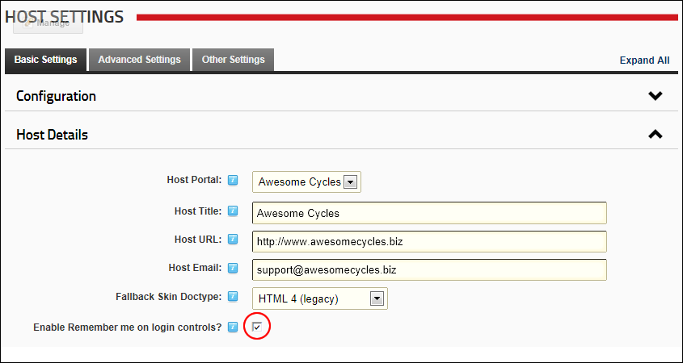

How to enable the Remember Login check box on the login control (Account Login module). This setting controls all sites within this DNN installation. This field uses cookies that persist over multiple visits.


The Remember Login field enabled on the Login Control